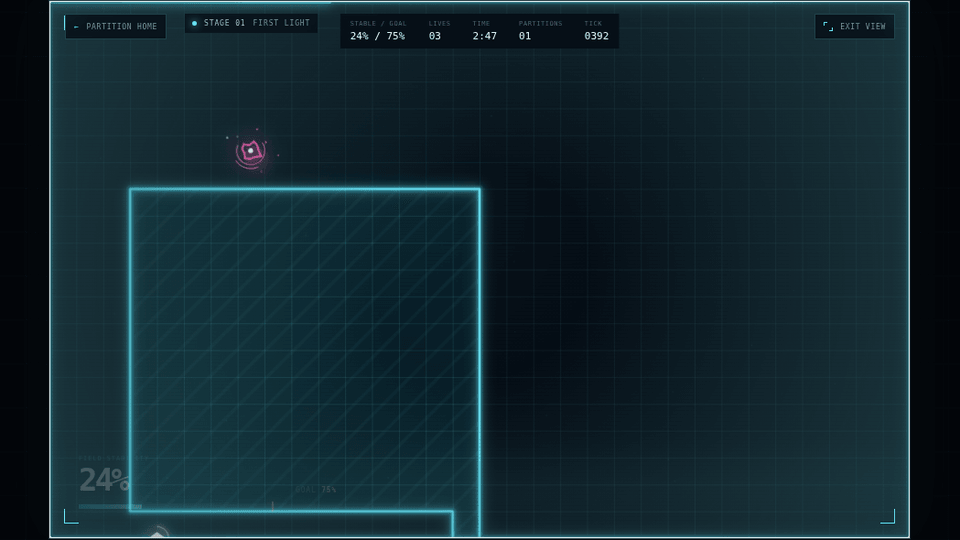

Internal review artifact — not published
The bench A: a top slab, two legs, and an extended crossbar, on a
24×24 grid. One solid silhouette in
--ab-blue, with no badge box, no shadow, and no outline
stroke. The shipped file is
deploy/brand/mark.svg, which is also the catalog
favicon. Do not redraw it, add a container, or rotate it.
Construction
Dashed outlines are the four source rectangles. The slab and both legs are one closed path; the crossbar is a second subpath and overlaps the legs, so the whole mark fills as a single union.
Size ladder
32px is the masthead size and the smallest size the mark has to be recognised at on its own. Below 24px it is a favicon, not a graphic: keep it unlabelled and let the tab title carry meaning.
One colourway ships. The others are for the dark gameplay plate if the mark ever needs to sit on artwork, and for single-colour reproduction. Never recolour the mark toward a game's palette.
Light — shipping
On the plate
Monochrome
Mark, then ARCADE stacked over BENCH in 800 weight, then an optional
free-play descriptor that appears at 900px and above. The two rows
are balanced by tracking rather than size: ARCADE at 0.05em, BENCH
at 0.15em, so the block squares off. The anchor always carries
aria-label="ArcadeBench" and the mark is decorative, so
the link keeps one plain spoken name.
The double rule under the masthead is the mark's crossbar, reused
once per page: .ab-crossbar-rule draws a second
hairline 4px below the border. It is the only ornament in the
system. Do not add it to cards, panels, or the footer.
Paper and surface are the page. Ink carries every readable mark.
Blue is spent on the bench mark and the play actions and nowhere
else. Red is scarce — it marks a route that went wrong and nothing
else. Contrast figures below are against paper
#F4F1E7.
Red is the only colour with a thin margin at 4.6:1, so it is held to fault labels at 13px/600 or larger and never used for body copy or for an icon that carries meaning on its own. Rule and plate are never used for text.
One family, ArcadeBench Sans: self-hosted Noto Sans at
weights 400, 600, and 800, served from /brand/fonts/.
Only those three weights are shipped, and every one of them is a
real file — there is no synthetic bolding and no fallback to a
host-installed face. Body is 400, utility is 600, titles are 800.
Choose your game.
Partition
Play Partition
A free browser arcade for everyone, inspired by the early arcade era.
Draw boundaries, claim space, and dodge the anomalies.
Keyboard or touch 20 authored fields
Page not found
Route 404 / No signal
Two button ranks. The primary action is arcade blue with paper text, a 2px border, a 6px radius, and at least a 44px target. Secondary actions stay on the surface with a fine border and ink text. Focus is always a 3px ink ring at a 3px offset, so it reads against paper and against blue.
Hover and focus above are pinned specimens that repeat the shipped declarations; hover the real specimen in the card below to see the live behaviour.
The card is the catalog's one repeating component. The 16:9 artwork window is the game's identity and is never restyled, recoloured, or framed by the brand — the surrounding surface stays neutral and the only brand colour on the card is the play action. This is the real markup and the real shipped cover, not a mock.

The brand stops at the edge of the artwork. Gameplay previews are real frames from the shipped games: they are not recoloured to match the palette, not given a shared illustrated cabinet, not cropped into a brand frame, and not replaced by a logo or a title card. A game's own typography and colour belong inside its window.
There is no neon, no simulated cabinet, no scanlines, no glow, and
no game-specific skin anywhere in the shell. There are no invented
institutions, founding dates, or award claims — the only promise
the site makes is the one in the footer. Read the full rules in
docs/BRAND-DESIGN-SYSTEM.md.